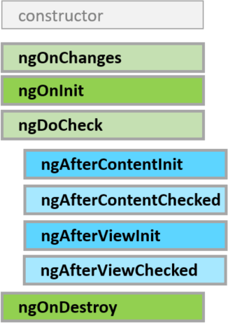

1. 钩子函数和执行顺序

1.1. ngOnChanges
ngOnChanges(changes: SimpleChanges): void;
当指令/组件绑定的输入属性的值发生变化时调用
该方法接收一个包含当前和先前属性值的SimpleChanges对象
首次调用发生在ngOnInit()之前，Angular只会在输入属性的值变化时调用这个钩子，非输入属性的值变化不会触发
export declare class SimpleChange {
previousValue: any;
currentValue: any;
firstChange: boolean;
constructor(previousValue: any, currentValue: any, firstChange: boolean);
/**
* 检测是不是第一次赋值
*/
isFirstChange(): boolean;
}
export interface SimpleChanges { [propName: string]: SimpleChange; }
1.2. ngOnInit
ngOnInit(): void;
在指令/组件的输入属性初始化（第一次ngOnChanges()）之后调用,只在指令/组件实例化时调用一次
constructor构造函数中一般用于依赖注入或简单的数据初始化操作，而ngOnInit()可以进行复杂的初始化逻辑获取数据
1.3. ngDoCheck
ngDoCheck(): void;
当指令/组件进行变化检测时调用，在ngOnChanges()和ngOnInit()之后调用
一次变化检测周期中，每一处变化都会触发这个函数
1.4. ngOnDestroy
ngOnDestroy(): void;
在Angular销毁指令/组件之前调用，可进行取消订阅可观察对象和分离事件处理器，以防内存泄漏。
1.5. ngAfterContentInit
ngAfterContentInit(): void;
当组件的内容初始化完成后调用。第一次ngDoCheck()之后调用，只调用一次。只适用于组件。
1.6. ngAfterContentChecked
ngAfterContentChecked(): void;
每次完成组件内容的变更检测之后调用。ngAfterContentInit()和每次ngDoCheck()之后调用。只适合组件。
1.7. ngAfterViewInit
ngAfterViewInit(): void;
初始化完组件视图及其子视图之后调用。第一次ngAfterContentChecked()之后调用，只调用一次。只适合组件。
1.8. ngAfterViewChecked
ngAfterViewChecked(): void;
每次组件视图和子视图的变更检测之后调用。ngAfterViewInit()和每次ngAfterContentChecked()之后调用。只适合组件。